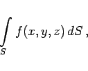
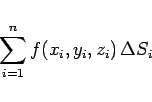

Inhalt Index DeskTop Bronstein

 Integralrechnung Oberflächenintegrale Oberflächenintegrale 1. Art Begriff des Oberflächenintegrals 1. Art
Integralrechnung Oberflächenintegrale Oberflächenintegrale 1. Art Begriff des Oberflächenintegrals 1. Art


Oberflächenintegral 1. Art einer Funktion von drei Veränderlichen , die in einem zusammenhängenden Gebiet definiert sein muß, nennt man das Integral
|  | (8.148) |
das über ein im allgemeinen gekrümmtes Flächenstück S in dem genannten Gebiet genommen wird. Der Zahlenwert des Oberflächenintegrals 1. Art wird auf die folgende Weise ermittelt (s. Abbildung):
|  | (8.149a) |
für den Fall, daß der Inhalt aller Elementarflächenstücke  gegen Null geht, also ihre Anzahl n gegen
gegen Null geht, also ihre Anzahl n gegen  . Dabei ist wieder zu beachten, daß der Durchmesser des Elementarflächenstückes gegen Null geht und nicht nur eine Ausdehnung.
. Dabei ist wieder zu beachten, daß der Durchmesser des Elementarflächenstückes gegen Null geht und nicht nur eine Ausdehnung.
Wenn dieser Grenzwert existiert und von der Art der Einteilung des Flächenstückes S in Elementarflächenstücke sowie von der Wahl der Punkte Mi(xi,yi,zi) unabhängig ist, dann wird er Oberflächenintegral 1. Art der Funktion u=f(x,y,z) über dem Flächenstück S genannt, und man schreibt
| (8.149b) |